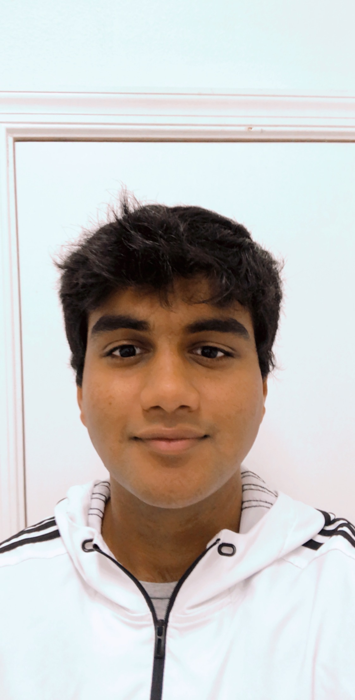

Let New Adventures BeginA good view of the Palm Beach coast
I have lived in florida my whole life. I dont fight
aligators or go fishing, not that theres anything wrong
with that to each their own. I just soak up the sun all
year round, sweat my heart
out in the summer, and freeze to death anytime the
weather drops below 60 degrees. Im really excited to
learn more about coding in general and python especially
since I've already scrated the surface while preparing
for my bootcamp.
My Hobbies
Eating Is A Necessity But Cooking Is An ArtA healthy vegetarian chili with toast on the side
I love eatting, I mean who doesnt, but Its caused me to
fall in love with cooking. Ive been cooking for friends
and family for the past couple of years its fun and really
really rewarding when people enjoy your food. I also love
working out and playing basketball and you have to be eatting
right when your exercising a good amount every week. That
coupled with trying to save money in college and also enjoying
food really sparked my intrest in cooking.
Yasir Qureshi

Student
Future Software Engineer
What's Next For Me
My current goal is to complete coding bootcamp
At the moment my biggest goal is to learn and absorb as much as I possbily
can. Im very excited for the start of my course and more obvously the completion.
I hope to get working in the field as soon as I can and continue to build on top
of what I will learn in the next 10 weeks.
Any Advice For Me?
Leave me some pointers or advice to help me on my journey